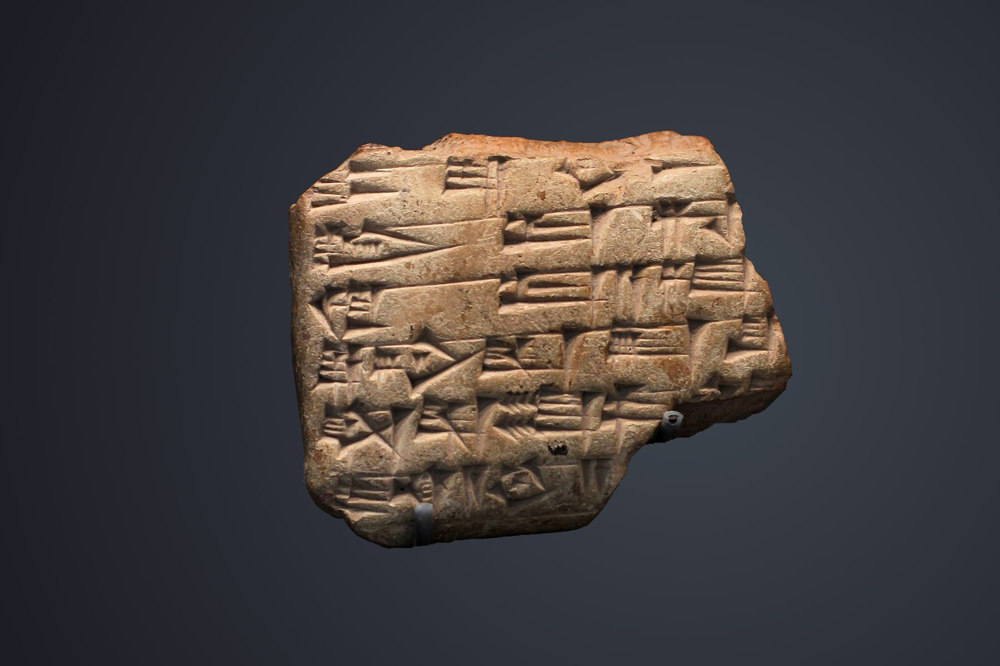

Mari Tablets

- Find Name
- Mari Tablets
- Description
- The Mari tablets are the royal archives of the ancient city of Mari (modern Tell Hariri) on the Middle Euphrates in Syria, roughly 20,000-25,000 cuneiform tablets and fragments, mostly dating to c. 1810-1760 BC during the reigns of Yasmah-Addu and Zimri-Lim. Excavations by a French expedition under Andre Parrot began in 1933 after a statue fragment was found, and most tablets came from the royal palace between 1934 and 1937, before Hammurabi destroyed the city c. 1760 BC. Written mainly in Akkadian, the archive holds diplomatic letters, administrative records, and treaties that document the politics, prophecy, and daily life of the Amorite world.
- Historical Period
- Old Babylonian period, c. 1810-1760 BC
- Evidence Class
- Contextual
- Interpretations
- The Mari archive illuminates the world behind the patriarchal narratives: an Amorite, semi-nomadic society with personal names resembling those in Genesis (such as Abi-ram and Iahqub-el), treaty customs, and prophetic figures who spoke messages to the king. It does not name Abraham or any patriarch, and the parallels are cultural background, not proof of the Genesis stories. Mari prophecy also differs sharply from Israelite prophecy: Mari prophets addressed the king about court and military affairs, while Israel's prophets spoke God's word to the whole nation, often in judgment.
- Alternative Names
- Mari Texts; Mari Archive; Archives Royales de Mari
- Related Places
- Related Books
- Scripture Illuminated
- Biblical Significance
- Mari shows that the Amorite world of Genesis - its names, customs, and caravan routes through Haran - matches the real early second millennium BC, giving the patriarchal setting a concrete historical backdrop.
- Artifact Date
- c. 1810-1760 BC
- Current Location
- Louvre Museum, Paris; National Museum of Damascus
- Date Discovered
- 1933-1937
- Discovery Location
- Tell Hariri (ancient Mari), Syria
- Timeline Era
- Primeval / Patriarchs
Awaiting Review Not yet checked against scholarly sources. Treat its claims as provisional until this entry is reviewed. About verification
Sources: https://en.wikipedia.org/wiki/Mari_texts
https://www.college-de-france.fr/en/agenda/lecture/elements-for-history-of-assyriology/1933-the-discovery-of-mari
https://www.college-de-france.fr/en/agenda/lecture/elements-for-history-of-assyriology/1933-the-discovery-of-mari
Last reviewed: not yet reviewed